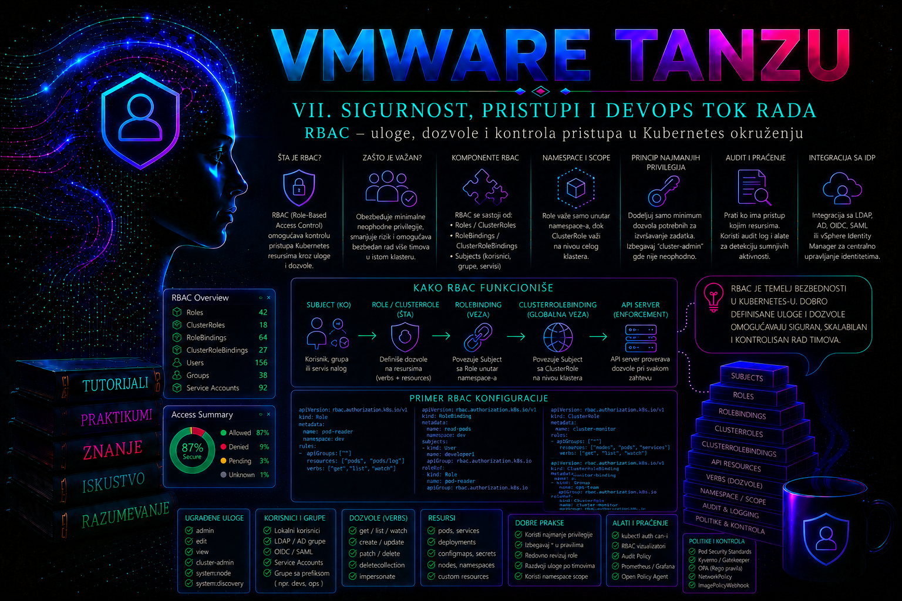

VMware & Tanzu

Kubernetes klaster nije bezbedan samo zato što je API endpoint zaštićen TLS-om i što se korisnici prijavljuju preko pouzdanog identity provider-a. Autentikacija potvrđuje identitet korisnika, servisnog naloga ili komponente, ali tek autorizacija određuje šta taj identitet sme da uradi. Role-Based Access Control, skraćeno RBAC, standardni je Kubernetes mehanizam za definisanje dozvoljenih operacija nad API resursima. U Tanzu okruženju isti Kubernetes RBAC model koristi se za kontrolu pristupa workload klasterima, dok način autentikacije i dobijanja kubeconfig konteksta zavisi od izdanja platforme, integracije sa vSphere identitetima, OIDC provider-om i organizacionim modelom upravljanja klasterima.
RBAC nije zamena za autentikaciju, admission kontrolu, NetworkPolicy, Pod
Security pravila, upravljanje tajnama ili bezbednost vSphere infrastrukture.
On rešava precizno određeno pitanje: da li autentifikovani subjekt sme da
izvrši konkretnu Kubernetes API operaciju nad određenim resursom. Zbog toga je
ispravno projektovanje RBAC-a jedna od osnovnih odgovornosti administratora
klastera. Preširoka dozvola može omogućiti čitanje tajni, pokretanje
privilegovanih workload-a, preuzimanje identiteta drugih servisa ili promenu
bezbednosnih kontrola. Preuska dozvola prekida aplikativne i DevOps tokove,
često bez jasnog simptoma osim odgovora Forbidden.
Tri ravni pristupa u vSphere Supervisor okruženju
U vSphere Supervisor okruženju izraz „pristup platformi” obuhvata tri povezane, ali odvojene ravni. Prva je vSphere autorizacija: vCenter Single Sign-On ili federisani identitet i vSphere privilegije određuju ko može da administrira vCenter, Supervisor i vSphere Namespace objekte. Druga je pristup Supervisor Namespace-u: dozvole dodeljene korisniku ili grupi na namespace-u određuju da li subjekt može da vidi namespace, prijavi se na Supervisor i koristi resurse koje je platform administrator tom namespace-u odobrio. Treća je Kubernetes autorizacija u konkretnom klasteru: Kubernetes RBAC određuje koje API operacije subjekt sme da izvrši u Supervisor API-ju ili u VKS workload klasteru. Pravo u jednoj ravni ne treba automatski tumačiti kao pravo u ostalima.
| Ravan | Kontrolna tačka | Tipični administrator | Dokaz uspeha |
|---|---|---|---|
| vCenter i infrastruktura | vCenter SSO/federacija i vSphere role/permissions | vSphere/platform administrator | Efektivna vSphere privilegija na tačnom objektu i očekivana vidljivost u vSphere Client-u |
| vSphere Namespace | Namespace Permissions i dodeljena namespace uloga | Platform administrator | Korisnik dobija namespace u listi dostupnih konteksta i može da zatraži podržane servise |
| Supervisor ili VKS klaster | Kubernetes autentikator i RBAC authorizer | Cluster operator |
kubectl auth can-i i stvarni API zahtev daju očekivani
pozitivan ili negativan rezultat
|
Nazivi proizvoda i tokovi zavise od izdanja. U dokumentaciji vSphere 7/8 često
se pojavljuju nazivi vSphere with Tanzu, TKG Service,
Tanzu Kubernetes Cluster i kubectl vsphere. U aktuelnoj
VCF 9 dokumentaciji dominantni su vSphere Supervisor i
vSphere Kubernetes Service (VKS). Zato se postupak mora proveriti
prema tačnom build-u vCenter/VCF sistema, Supervisor verziji i podržanoj
Kubernetes release matrici; komande i RBAC principi ostaju isti, ali nazivi
uloga, ekrani, API resursi i mogućnosti identity provider-a nisu nužno
identični.
Autentikacija administratora, operatora i developera
Platform administrator se najčešće autentikuje prema vCenter-u identitetom iz vCenter Single Sign-On domena ili podržanog federisanog izvora identiteta i poseduje vSphere privilegije za konfiguraciju Supervisor-a i namespace-a. Cluster operator dobija administrativni ili delegirani pristup određenom Supervisor/VKS klasteru. Developer dobija samo namespace i workload prava potrebna timu. Za dnevni rad sva tri profila treba da koriste imenovane lične naloge i grupno članstvo; zajednički administratorski nalog otežava opoziv, atribuciju i audit.
Kod vCenter SSO toka korisnik preuzima kompatibilan vSphere Plugin for kubectl
sa Supervisor endpoint-a, zatim izvršava prijavu prema Supervisor
control-plane adresi. Plugin pribavlja kratkotrajan autentikacioni materijal i
ažurira kubeconfig kontekst; lozinku ne treba ugrađivati u komandu, shell
istoriju ili skriptu. Naziv izvršne komande je
kubectl vsphere login, iako se binarni plugin u distribuciji
uobičajeno pojavljuje kao kubectl-vsphere. Primer je šablon:
stvarni endpoint, korisničko ime, namespace i naziv workload klastera moraju
se preuzeti iz sopstvenog okruženja.
# Read-only provera klijenta i postojećih konteksta
kubectl version --client
kubectl config get-contexts
# Interaktivna prijava: ne prosleđivati lozinku u komandnoj liniji
kubectl vsphere login \
--server=SUPERVISOR-CONTROL-PLANE-IP-ILI-FQDN \
--vsphere-username='korisnik@domen' \
--insecure-skip-tls-verify=false
# Izbor već kreiranog konteksta i potvrda identiteta/autorizacije
kubectl config use-context NAZIV-KONTEKSTA
kubectl auth whoami
kubectl auth can-i get namespaces
kubectl auth whoami je read-only SelfSubjectReview i radi samo
ako ga podržavaju verzija API servera i klijenta; u starijem klasteru njegov
izostanak nije dokaz neuspele prijave. TLS proveru ne treba zaobilaziti u
produkciji. Ako sertifikat endpoint-a nije pouzdan, trajna korekcija je
ispravan CA lanac, SAN i distribucija poverenja, a ne
--insecure-skip-tls-verify=true. Kubeconfig je poverljiv fajl:
čuva se sa dozvolom 0600, ne šalje se tiketom i ne objavljuje u
repozitorijumu.
Spoljni OIDC/LDAP identitet ne stvara automatski Kubernetes User objekat, jer takav trajni API objekat ne postoji. Autentikator iz tokena izvodi korisničko ime i grupe, a RBAC binding mora koristiti upravo te efektivne stringove. Promena claim mapiranja, prefiksa grupe ili identity provider-a može zato prekinuti pristup iako se korisnik i dalje uspešno prijavljuje. Pre migracije identiteta treba izvesti mapu svih binding-a, obezbediti provereni „break-glass” put, testirati nov identitet u neprodukcijskom namespace-u i tek zatim ukloniti stari binding.
Mesto RBAC-a u kontroli pristupa Kubernetes API-ju
Zahtev prema Kubernetes API-ju prolazi kroz nekoliko logičkih kontrola. API server najpre utvrđuje identitet podnosioca zahteva postupkom autentikacije. Rezultat je korisničko ime, skup grupa i, kada je primenljivo, dodatni identitetski podaci. Zatim autorizacioni mehanizmi procenjuju da li je zahtev dozvoljen. Ako je autorizacija uspešna, admission kontroleri mogu dodatno da odbiju zahtev ili izmene objekat pre njegovog čuvanja. RBAC zato ne potvrđuje ko je korisnik i ne proverava bezbednost sadržaja Pod specifikacije; on poredi atribute zahteva sa pravilima koja su administratoru dostupna kroz Kubernetes API objekte.
Za autorizaciju su značajni identitet korisnika, pripadnost grupama, API
grupa, tip resursa, podresurs, namespace, naziv objekta i traženi glagol.
Zahtev za čitanje loga poda, na primer, nije isto što i zahtev za čitanje
samog Pod objekta: logovi se autorizuju nad podresursom pods/log.
Slično tome, pravilo koje dozvoljava get nad Deployment objektima
ne dozvoljava njihovu izmenu, a pravilo za resurse u jednom namespace-u ne
mora važiti u drugom.
Kubernetes autorizacija je efektivno model dozvola: zahtev mora biti dozvoljen najmanje jednim aktivnim autorizacionim pravilom, dok nepostojanje odgovarajuće dozvole dovodi do odbijanja. Standardni Kubernetes RBAC nema eksplicitno pravilo „deny” kojim bi se poništila druga dozvola. Kada je korisniku isto pravo dodeljeno preko bilo kog drugog RoleBinding ili ClusterRoleBinding objekta, uža uloga ga neće oduzeti. Zbog toga se incident sa preširokim pravima rešava pronalaženjem i uklanjanjem izvora dozvole, a ne dodavanjem restriktivnije uloge.
RBAC objekti i opseg njihovog delovanja
RBAC API definiše četiri osnovna objekta: Role,
ClusterRole, RoleBinding i
ClusterRoleBinding. Role i ClusterRole sadrže pravila, dok
RoleBinding i ClusterRoleBinding povezuju pravila sa korisnicima, grupama ili
servisnim nalozima. Razdvajanje uloge od dodele omogućava da se ista
definicija dozvola ponovo koristi za više timova i namespace-ova bez kopiranja
korisničkih identiteta u samu ulogu.
| Objekat | Opseg | Namena | Važna posledica |
|---|---|---|---|
Role |
Jedan namespace | Definiše dozvole nad namespaced resursima u tom namespace-u | Ne može da daje prava u drugom namespace-u niti nad cluster-scoped resursima |
ClusterRole |
Definicija na nivou klastera | Definiše prava nad cluster-scoped resursima ili skup pravila koji se može koristiti u više namespace-ova | Sam objekat ne dodeljuje prava dok se ne poveže odgovarajućim binding-om |
RoleBinding |
Jedan namespace | Dodeljuje Role ili ClusterRole subjektima samo unutar namespace-a binding-a | Referencirani ClusterRole ostaje ograničen na namespace za namespaced resurse |
ClusterRoleBinding |
Ceo klaster | Dodeljuje ClusterRole subjektima u svim namespace-ovima i nad odgovarajućim cluster-scoped resursima | Pogrešna dodela može trenutno proširiti pristup na kompletan klaster |
Posebno je važna razlika između ClusterRole objekta i njegove dodele. Centralno održavan ClusterRole može sadržati standardna prava aplikativnog operatera, a zatim se različitim RoleBinding objektima dodeliti timu samo u namespace-ovima za koje je odgovoran. To je bezbednije od ClusterRoleBinding objekta, koji bi istu ulogu proširio na ceo klaster. ClusterRoleBinding treba koristiti samo kada posao zaista zahteva klasterski opseg, na primer za kontroler koji mora da nadgleda resurse u svim namespace-ovima ili za strogo kontrolisan administratorski tim.
Ugrađene ClusterRole uloge kao što su view, edit,
admin i cluster-admin olakšavaju početnu
administraciju, ali nisu automatski odgovarajuće za svaki enterprise model.
Uloga view je namenjena pretežno čitanju i standardno ne daje
pristup Secret objektima. Uloga edit omogućava široku izmenu
namespaced resursa i može biti znatno moćnija nego što njen naziv sugeriše.
Uloga admin namenjena je administraciji namespace-a, dok
cluster-admin predstavlja praktično neograničenu kontrolu i
zahteva strogu zaštitu. Ugrađene uloge treba pregledati u konkretnoj verziji
klastera komandom kubectl describe clusterrole, a ne procenjivati
samo prema nazivu.
Pravila, API grupe, resursi i glagoli
Svako pravilo u Role ili ClusterRole objektu navodi API grupe, resurse i
dozvoljene glagole. Jezgro Kubernetes API-ja, u kome se nalaze Pod, Service,
ConfigMap i Secret, označava se praznim stringom u polju
apiGroups. Deployment i ReplicaSet pripadaju grupi
apps. Pravilo za pogrešnu API grupu neće dati očekivanu dozvolu
čak i kada je naziv resursa ispravan.
Najčešći RBAC glagoli su get, list,
watch, create, update,
patch i delete. Glagol get čita poznati
objekat, list vraća kolekciju, a watch prati
promene. update zamenjuje deklarisano stanje objekta na osnovu
njegove trenutne verzije, dok patch menja odabrane delove.
Dozvola create ne podrazumeva update, kao što
update ne podrazumeva delete. Podresursi se navode
eksplicitno, na primer pods/log, pods/exec,
deployments/scale ili serviceaccounts/token.
Dozvole nad podresursima zahtevaju posebnu pažnju. Pristup
pods/exec omogućava izvršavanje procesa u kontejneru i može
otvoriti pristup aplikativnim podacima, mrežnim identitetima i tokenu
servisnog naloga. Pravo kreiranja tokena preko
serviceaccounts/token omogućava dobijanje kredencijala servisnog
naloga. Pravo kreiranja Pod objekata takođe može biti put ka dodatnim
privilegijama ako korisnik može da izabere moćan service account, montira
osetljiv volumen ili iskoristi nedovoljno restriktivnu admission politiku.
RBAC analiza zato ne sme biti ograničena na čitanje liste glagola; mora se
proceniti šta dozvoljeni objekti omogućavaju u kombinaciji sa ostalim
kontrolama.
Wildcard vrednosti * za API grupe, resurse ili glagole treba
izbegavati u aplikativnim ulogama. One mogu automatski obuhvatiti nove resurse
ili operacije uvedene budućim verzijama, čime se stvarni obim dozvole menja
bez izmene RBAC manifesta. Kada je potreban pristup samo određenim imenovanim
objektima, polje resourceNames može dodatno ograničiti pravilo.
Takvo ograničenje ima praktična ograničenja, naročito kod operacija kreiranja
i listanja, pa se mora testirati konkretnim zahtevima koje koristi aplikacija
ili automatizacija.
Korisnici, grupe i servisni nalozi
Kubernetes razlikuje normalne korisnike, koje obezbeđuje spoljni sistem
identiteta, i ServiceAccount objekte kojima upravlja Kubernetes API. Normalni
korisnik nije Kubernetes objekat koji administrator kreira komandom
kubectl create user. Njegovo korisničko ime i grupe dolaze iz
klijentskog sertifikata, OIDC tokena, autentikacionog proxy-ja ili
platformskog mehanizma. Zato RBAC manifest mora koristiti tačne vrednosti koje
API server vidi nakon autentikacije, a ne prikazno ime iz korporativnog
direktorijuma.
U enterprise okruženju prava je bolje dodeljivati grupama nego pojedinačnim korisnicima. Članstvo se tada održava u centralnom identity provider-u, dok Kubernetes binding ostaje stabilan. Individualna dodela opravdana je za privremeni kontrolisani izuzetak, tehnički identitet ili incident, ali mora imati vlasnika, rok važenja i zahtev za uklanjanje. Posebno treba izbegavati trajne ClusterRoleBinding objekte vezane za lične naloge.
ServiceAccount je identitet procesa koji radi u klasteru. Njegovo puno
korisničko ime ima oblik system:serviceaccount:NAMESPACE:NAME, a
svi servisni nalozi pripadaju grupama kao što su
system:serviceaccounts i
system:serviceaccounts:NAMESPACE. Vezivanje privilegija za ove
široke grupe može nenamerno ovlastiti svaki postojeći i budući service
account. Bezbedniji pristup je namenski service account po komponenti,
minimalna Role ili ClusterRole i zaseban binding.
Savremeni Kubernetes workload-i uobičajeno koriste vremenski ograničene,
projektovane ServiceAccount tokene. Trajne token Secret objekte ne treba ručno
kreirati bez posebnog razloga. Za interaktivnu dijagnostiku administrator može
privremeno dobiti token komandom kubectl create token, ali token
se ne upisuje u Git, tiket, skriptu ili dokumentaciju. Kada aplikaciji nije
potreban pristup Kubernetes API-ju, u Pod specifikaciji treba razmotriti
automountServiceAccountToken: false.
Projektovanje najmanjeg potrebnog skupa privilegija
Princip najmanjih privilegija znači da subjekt dobija samo resurse, glagole i opseg potrebne za potvrđen poslovni zadatak. To nije jednokratno pisanje YAML datoteke, već proces: identifikovanje stvarnih API zahteva, odvajanje ljudskih i mašinskih identiteta, testiranje pozitivnih i negativnih operacija, nadzor korišćenja i periodično uklanjanje neupotrebljenih prava.
Dobra uloga prati funkciju, a ne organizacionu hijerarhiju. Nazivi kao što su
payments-developer, payments-deployer i
payments-observer jasniji su od generičkih uloga
team1 ili power-user. Operacije čitanja,
implementacije i administracije treba razdvojiti kada ih obavljaju različiti
identiteti. CI/CD servisnom nalogu nisu automatski potrebni
pods/exec, čitanje Secret vrednosti, kreiranje RoleBinding
objekata ili pristup node-ovima samo zato što implementira aplikaciju.
Prava za menjanje RBAC objekata predstavljaju privilegovanu operaciju.
Kubernetes sprečava neke oblike samostalnog proširenja privilegija tako što
korisnik ne može jednostavno dodeliti prava koja sam nema, osim kada poseduje
odgovarajuće specijalne dozvole kao što su bind ili
escalate. Međutim, nalog koji može menjati binding prema već
moćnoj ulozi, kreirati privilegovane workload-e ili preuzeti service account
sa širim pravima i dalje može postići efekat eskalacije. Zbog toga se RBAC
objekti, service account-i, admission politike i workload privilegije
analiziraju zajedno.
Provera efektivnih prava i dijagnostika odbijenog zahteva
Osnovna administratorska komanda je kubectl auth can-i. Ona šalje
autorizacioni upit za određeni glagol, resurs, namespace i, po potrebi,
podresurs. Korisnik može proveriti sopstveno pravo, dok administrator sa
dozvolom impersonacije može simulirati drugi identitet korišćenjem opcija
--as i --as-group. Impersonacija je privilegovana i
mora se ograničiti i auditovati.
kubectl auth can-i get pods -n tanzu-prod-payments
kubectl auth can-i create deployments.apps -n tanzu-prod-payments
kubectl auth can-i get pods --subresource=log -n tanzu-prod-payments
kubectl auth can-i --list -n tanzu-prod-payments
Odgovor yes potvrđuje da autorizacioni sloj trenutno dozvoljava
proverenu operaciju, ali ne garantuje da će admission kontrola prihvatiti
objekat niti da će workload uspešno raditi. Odgovor no znači da
odgovarajuća dozvola nije pronađena ili da drugi aktivni autorizacioni
mehanizam nije dao potreban rezultat. Za analizu se zatim pregledaju
RoleBinding i ClusterRoleBinding objekti koji pominju korisnika, njegove grupe
ili service account, kao i sadržaj referenciranih uloga.
kubectl get role,rolebinding -n tanzu-prod-payments
kubectl get clusterrole,clusterrolebinding
kubectl describe role payments-developer -n tanzu-prod-payments
kubectl describe rolebinding payments-developers -n tanzu-prod-payments
kubectl get rolebinding payments-developers -n tanzu-prod-payments -o yaml
Najčešće greške su pogrešno ime grupe, binding u pogrešnom namespace-u,
korišćenje Role umesto ClusterRole za cluster-scoped resurs, izostavljen
podresurs, pogrešna API grupa ili pretpostavka da jedno pravo podrazumeva
drugo. Ako autentikacija nije uspela, simptom može biti
Unauthorized; ako je identitet poznat ali nema dozvolu, uobičajen
odgovor je Forbidden. Greška admission kontrolera javlja se nakon
autorizacije i obično sadrži naziv politike ili kontrolera koji je odbio
objekat.
Audit, promena i životni ciklus RBAC konfiguracije
Kubernetes audit evidencija pruža hronološke zapise o zahtevima prema API serveru i omogućava odgovor na pitanja ko je izvršio operaciju, nad kojim resursom, kada i sa kakvim rezultatom. Dostupnost, odredište i politika audit logovanja zavise od načina implementacije klastera i odgovornosti platformskog tima. U samostalno upravljanom control plane-u audit politika i backend podešavaju se na API serveru; u platformski upravljanom Tanzu okruženju administrator workload-a možda nema pristup host datotekama control plane-a, pa logove preuzima kroz podržani centralni logging ili platformsku dijagnostiku.
Audit zapise treba slati u centralni sistem sa kontrolisanim pristupom i retencijom usklađenom sa bezbednosnom politikom. Posebno se prate izmene Role, ClusterRole, RoleBinding i ClusterRoleBinding objekata, pokušaji impersonacije, kreiranje service account tokena, pristup Secret objektima i privilegovane operacije. Audit politika mora biti dovoljno informativna, ali ne sme nekontrolisano beležiti osetljiva tela zahteva i odgovora.
RBAC konfiguraciju treba čuvati deklarativno u verzionisanom repozitorijumu,
pregledati kroz pull request i primenjivati kontrolisanim tokom. Ručna hitna
izmena komandom kubectl edit može biti opravdana tokom incidenta,
ali mora biti naknadno preneta u izvor konfiguracije ili vraćena, jer u
suprotnom nastaje razlika između klastera i repozitorijuma. Pre promene se
čuva trenutni YAML, proverava identitet operatera i utvrđuje postoji li
nezavisan administratorski pristup za oporavak. Nakon promene izvode se
pozitivni i negativni testovi, proverava audit trag i beleži vlasnik
odobrenja.
Integrisani praktikum – namespace pristup za razvojni tim i CI/CD servisni nalog
Poslovni i tehnički kontekst. Tim za platni servis održava
aplikaciju u workload klasteru Tanzu okruženja. Članovi grupe
team-payments-developers treba da pregledaju Pod, ReplicaSet i
Deployment objekte, čitaju logove i menjaju aplikativne Deployment, Service i
ConfigMap resurse isključivo u namespace-u tanzu-prod-payments.
Ne smeju da čitaju Secret objekte, izvršavaju komande u kontejnerima, menjaju
RBAC niti pristupaju drugim namespace-ovima. CI/CD sistem koristi service
account cicd-deployer i dobija samo prava potrebna za
deklarativnu implementaciju aplikacije.
Cilj. Kreirati namespace, dve namenski ograničene uloge i odgovarajuće binding objekte, potvrditi dozvoljene operacije, izvesti negativne testove i dokumentovati povratak na prethodno stanje.
Referentno okruženje i preduslovi. Administrator koristi
kontekst tkg-workload-prod-admin, ima pravo kreiranja namespace i
RBAC objekata i poseduje lokalni direktorijum
~/tashizza-labs/rbac-payments. Grupa
team-payments-developers već postoji u povezanom identity
provider-u i API server je vidi pod tim tačnim nazivom. Komande se izvršavaju
sa administrativne radne stanice na kojoj su instalirani kompatibilni
kubectl i bezbedno pribavljen kubeconfig. Pravo impersonacije
koristi se samo za testiranje i nije dostupno razvojnom timu.
-
Potvrda klastera, identiteta i početnog stanja.
Pre promene proverava se aktivni kontekst kako bi se sprečilo primenjivanje
pravila na pogrešan klaster. Zatim se proverava da li ciljni namespace već
postoji.
Validacija: aktivni kontekst mora bitikubectl config current-context kubectl cluster-info kubectl get namespace tanzu-prod-paymentstkg-workload-prod-admin. Očekivano je da poslednja komanda pre prve implementacije vratiNotFound. Ako namespace postoji, postupak se zaustavlja dok se ne pregleda njegov vlasnik i postojeći RBAC objekti; postojeće produkciono okruženje ne sme se prepisati pretpostavkom da je prazno. -
Priprema radnog direktorijuma i namespace manifesta.
Direktorijum se kreira sa restriktivnim dozvolama, a namespace dobija oznake
koje omogućavaju vlasništvo i klasifikaciju okruženja.
Validacija: namespace mora biti u stanjumkdir -p ~/tashizza-labs/rbac-payments chmod 700 ~/tashizza-labs/rbac-payments cd ~/tashizza-labs/rbac-payments cat > 01-namespace.yaml <<'EOF' apiVersion: v1 kind: Namespace metadata: name: tanzu-prod-payments labels: app.kubernetes.io/part-of: payments-platform environment: production owner: payments-team EOF kubectl apply -f 01-namespace.yamlActive, sa očekivanim oznakama.kubectl get namespace tanzu-prod-payments --show-labels kubectl wait --for=jsonpath='{.status.phase}'=Active namespace/tanzu-prod-payments --timeout=60s -
Kreiranje service account-a za automatizaciju.
CI/CD dobija namenski identitet umesto korišćenja podrazumevanog service
account-a.
Validacija: objekat mora postojati u ciljnom namespace-u, a automatsko montiranje tokena mora biti isključeno. Ovo ne sprečava kontrolisano dobijanje vremenski ograničenog tokena kada CI/CD integracija to zahteva, ali smanjuje nepotrebno izlaganje tokena Pod-ovima koji koriste ovaj identitet.cat > 02-serviceaccount.yaml <<'EOF' apiVersion: v1 kind: ServiceAccount metadata: name: cicd-deployer namespace: tanzu-prod-payments automountServiceAccountToken: false EOF kubectl apply -f 02-serviceaccount.yamlkubectl get serviceaccount cicd-deployer -n tanzu-prod-payments -o yaml -
Definisanje uloge razvojnog tima.
Uloga dozvoljava pregled workload-a, čitanje Pod logova i upravljanje
odabranim aplikativnim resursima. Namerno ne sadrži Secret, RoleBinding,
pods/execniti wildcard pravila.
Validacija: opis uloge mora prikazati samo navedene API grupe, resurse i glagole. Posebno se proverava da nema Secret i RBAC resursa.cat > 03-developer-role.yaml <<'EOF' apiVersion: rbac.authorization.k8s.io/v1 kind: Role metadata: name: payments-developer namespace: tanzu-prod-payments rules: - apiGroups: [""] resources: ["pods"] verbs: ["get", "list", "watch"] - apiGroups: [""] resources: ["pods/log"] verbs: ["get"] - apiGroups: [""] resources: ["services", "configmaps"] verbs: ["get", "list", "watch", "create", "update", "patch", "delete"] - apiGroups: ["apps"] resources: ["deployments"] verbs: ["get", "list", "watch", "create", "update", "patch", "delete"] - apiGroups: ["apps"] resources: ["replicasets"] verbs: ["get", "list", "watch"] EOF kubectl apply -f 03-developer-role.yamlkubectl describe role payments-developer -n tanzu-prod-payments kubectl get role payments-developer -n tanzu-prod-payments -o yaml -
Povezivanje razvojne grupe sa ulogom.
RoleBinding koristi subjekt tipa
Group. PoljeapiGroupsubjekta iroleRefmoraju imati vrednostrbac.authorization.k8s.io.
Validacija: binding mora referencirati Rolecat > 04-developer-binding.yaml <<'EOF' apiVersion: rbac.authorization.k8s.io/v1 kind: RoleBinding metadata: name: payments-developers namespace: tanzu-prod-payments subjects: - kind: Group name: team-payments-developers apiGroup: rbac.authorization.k8s.io roleRef: kind: Role name: payments-developer apiGroup: rbac.authorization.k8s.io EOF kubectl apply -f 04-developer-binding.yamlpayments-developer, a subjekt mora biti tačno imenovana grupa. PoljeroleRefje nepromenljivo; promena referencirane uloge zahteva brisanje i ponovno kreiranje binding-a.kubectl describe rolebinding payments-developers -n tanzu-prod-payments -
Definisanje uloge CI/CD identiteta.
Automatizacija dobija upravljanje Deployment, Service i ConfigMap objektima
i čitanje stanja Pod i ReplicaSet objekata. Ne dobija pravo čitanja logova,
tajni, izvršavanja komandi ili menjanja RBAC-a.
Validacija: service account mora biti jedini subjekt ovog binding-a, a referencirana uloga mora biti namespaced Role.cat > 05-cicd-role.yaml <<'EOF' apiVersion: rbac.authorization.k8s.io/v1 kind: Role metadata: name: payments-cicd-deployer namespace: tanzu-prod-payments rules: - apiGroups: [""] resources: ["services", "configmaps"] verbs: ["get", "list", "watch", "create", "update", "patch", "delete"] - apiGroups: [""] resources: ["pods"] verbs: ["get", "list", "watch"] - apiGroups: ["apps"] resources: ["deployments"] verbs: ["get", "list", "watch", "create", "update", "patch", "delete"] - apiGroups: ["apps"] resources: ["replicasets"] verbs: ["get", "list", "watch"] EOF cat > 06-cicd-binding.yaml <<'EOF' apiVersion: rbac.authorization.k8s.io/v1 kind: RoleBinding metadata: name: payments-cicd-deployer namespace: tanzu-prod-payments subjects: - kind: ServiceAccount name: cicd-deployer namespace: tanzu-prod-payments roleRef: kind: Role name: payments-cicd-deployer apiGroup: rbac.authorization.k8s.io EOF kubectl apply -f 05-cicd-role.yaml kubectl apply -f 06-cicd-binding.yamlkubectl get role,rolebinding -n tanzu-prod-payments kubectl describe rolebinding payments-cicd-deployer -n tanzu-prod-payments -
Pozitivni autorizacioni testovi.
Administrator simulira razvojnog korisnika
ana.petrovicsa pripadnošću ciljnoj grupi. Opcija--as-group=system:authenticatedpribližava standardni skup grupa autentifikovanog korisnika. Ovu proveru može izvršiti samo nalog koji ima pravo impersonacije.
Validacija: sve četiri komande moraju vratitikubectl auth can-i get pods \ --as=ana.petrovic \ --as-group=system:authenticated \ --as-group=team-payments-developers \ -n tanzu-prod-payments kubectl auth can-i get pods \ --subresource=log \ --as=ana.petrovic \ --as-group=system:authenticated \ --as-group=team-payments-developers \ -n tanzu-prod-payments kubectl auth can-i patch deployments.apps \ --as=ana.petrovic \ --as-group=system:authenticated \ --as-group=team-payments-developers \ -n tanzu-prod-payments kubectl auth can-i create deployments.apps \ --as=system:serviceaccount:tanzu-prod-payments:cicd-deployer \ -n tanzu-prod-paymentsyes. Ako grupa nije prepoznata, prva tri testa vratićeno; tada se proverava stvarni naziv grupe iz autentikacionog sistema i audit zapisa, a ne proširuje se uloga nasumičnim dodavanjem privilegija. -
Negativni testovi.
Testovi potvrđuju da razvojni tim ne može čitati Secret objekte, izvršavati
komande u Pod-u, menjati RBAC niti pristupiti istim resursima u namespace-u
default. CI/CD identitet ne sme čitati Secret niti menjati RoleBinding.
Validacija: svih šest komandi mora vratitikubectl auth can-i get secrets \ --as=ana.petrovic \ --as-group=system:authenticated \ --as-group=team-payments-developers \ -n tanzu-prod-payments kubectl auth can-i create pods \ --subresource=exec \ --as=ana.petrovic \ --as-group=system:authenticated \ --as-group=team-payments-developers \ -n tanzu-prod-payments kubectl auth can-i create rolebindings.rbac.authorization.k8s.io \ --as=ana.petrovic \ --as-group=system:authenticated \ --as-group=team-payments-developers \ -n tanzu-prod-payments kubectl auth can-i get pods \ --as=ana.petrovic \ --as-group=system:authenticated \ --as-group=team-payments-developers \ -n default kubectl auth can-i get secrets \ --as=system:serviceaccount:tanzu-prod-payments:cicd-deployer \ -n tanzu-prod-payments kubectl auth can-i patch rolebindings.rbac.authorization.k8s.io \ --as=system:serviceaccount:tanzu-prod-payments:cicd-deployer \ -n tanzu-prod-paymentsno. Bilo koji odgovoryesukazuje da subjekt dobija dodatnu dozvolu iz drugog binding-a ili autorizacionog mehanizma. Tada se promena ne prihvata dok se ne identifikuje izvor efektivnog prava. -
Funkcionalna provera kontrolisanim test objektom.
Administrator kreira malu demonstracionu aplikaciju bez tajni i eksternih
zavisnosti, a zatim proverava da li razvojna grupa ima očekivana prava nad
njenim objektima.
Validacija: Deployment mora imati jednu dostupnu repliku, Service mora imati endpoint, a Pod mora biti u stanjucat > 07-demo-app.yaml <<'EOF' apiVersion: v1 kind: ConfigMap metadata: name: payments-demo-config namespace: tanzu-prod-payments data: APP_MODE: "validation" --- apiVersion: apps/v1 kind: Deployment metadata: name: payments-demo namespace: tanzu-prod-payments spec: replicas: 1 selector: matchLabels: app: payments-demo template: metadata: labels: app: payments-demo spec: automountServiceAccountToken: false containers: - name: web image: registry.k8s.io/e2e-test-images/agnhost:2.53 args: ["netexec", "--http-port=8080"] ports: - containerPort: 8080 --- apiVersion: v1 kind: Service metadata: name: payments-demo namespace: tanzu-prod-payments spec: selector: app: payments-demo ports: - port: 80 targetPort: 8080 EOF kubectl apply -f 07-demo-app.yaml kubectl rollout status deployment/payments-demo \ -n tanzu-prod-payments \ --timeout=180sRunning. U zatvorenom registru primer slike mora se prethodno preslikati u odobreni interni registry i manifest prilagoditi; RBAC uspeh ne rešava problem nedostupne slike.kubectl get deployment,pod,service,endpoints \ -n tanzu-prod-payments \ -l app=payments-demo kubectl auth can-i patch deployment/payments-demo \ --as=ana.petrovic \ --as-group=system:authenticated \ --as-group=team-payments-developers \ -n tanzu-prod-payments -
Čuvanje dokaza promene i provera audit traga.
Primenjeni objekti izvoze se kao stanje posle promene. Datoteke ne sadrže
tokene niti Secret vrednosti.
Validacija: fajlovi moraju biti čitljivi samo vlasniku radnog direktorijuma i priloženi kontrolisanom change zapisu ili repozitorijumu prema internoj proceduri.kubectl get namespace tanzu-prod-payments -o yaml \ > applied-namespace.yaml kubectl get role,rolebinding,serviceaccount \ -n tanzu-prod-payments \ -o yaml > applied-rbac-state.yaml kubectl auth can-i --list \ --as=ana.petrovic \ --as-group=system:authenticated \ --as-group=team-payments-developers \ -n tanzu-prod-payments \ > developer-effective-access.txt
Audit sistem treba pretražiti prema namespace-uchmod 600 applied-namespace.yaml applied-rbac-state.yaml developer-effective-access.txt ls -l applied-namespace.yaml applied-rbac-state.yaml developer-effective-access.txttanzu-prod-payments, korisniku administratora i objektima iz API gruperbac.authorization.k8s.io. U upravljanom Tanzu okruženju koristi se podržani centralni logging ili platforma za audit; lokalna putanja API server loga ne sme se pretpostaviti. Očekivani rezultat je zapis kreiranja Role i RoleBinding objekata i autorizacionih provera, bez neobjašnjenih promena drugih subjekata. -
Rollback i cleanup laboratorijskog scenarija.
U produkciji se namespace ne briše samo radi povratka RBAC promene, jer bi
brisanje uklonilo sve namespaced workload-e i podatke povezane sa tim
objektima. Bezbedan rollback RBAC dela uklanja binding-e i uloge, dok
workload ostaje pod administrativnom kontrolom.
Validacija: simulirani korisnik i service account više ne smeju imati dodeljena prava.kubectl delete -f 06-cicd-binding.yaml kubectl delete -f 05-cicd-role.yaml kubectl delete -f 04-developer-binding.yaml kubectl delete -f 03-developer-role.yaml kubectl delete -f 02-serviceaccount.yaml
Obe provere moraju vratitikubectl auth can-i get pods \ --as=ana.petrovic \ --as-group=system:authenticated \ --as-group=team-payments-developers \ -n tanzu-prod-payments kubectl auth can-i create deployments.apps \ --as=system:serviceaccount:tanzu-prod-payments:cicd-deployer \ -n tanzu-prod-paymentsno. Samo u namenskom laboratorijskom klasteru, nakon potvrde da nema drugih resursa, kompletan scenario može se ukloniti komandomkubectl delete namespace tanzu-prod-payments. Brisanje namespace-a je destruktivno i nije prihvatljiv produkcioni rollback.
Merljivi kriterijumi prihvatanja. Namespace je
Active; razvojna grupa može da čita Pod objekte i logove i da
upravlja Deployment, Service i ConfigMap objektima samo u ciljnom namespace-u;
CI/CD service account može da implementira deklarisane aplikativne resurse;
oba subjekta dobijaju no za Secret, RBAC i nedozvoljene
podresurse; funkcionalni Deployment postaje raspoloživ u zadatom roku; audit i
change zapis sadrže identitet operatera, vreme, odobrenje, primenjene
manifeste, rezultate pozitivnih i negativnih testova i postupak rollback-a.
Tipične greške i njihovo razlikovanje
-
Pogrešan namespace: Role i RoleBinding postoje, ali u
drugom namespace-u.
kubectl auth can-ivraćanosamo u ciljnom prostoru. Proveravaju se metapodaci oba objekta. - Pogrešan naziv grupe: manifest izgleda ispravno, ali identity provider šalje drugi naziv ili prefiks. Proveravaju se autentikacioni i audit podaci, a ne dodaje se individualni binding kao trajna prečica.
-
Nedostajući podresurs: korisnik može da čita Pod, ali ne i
log ili exec sesiju. Proveravaju se posebni resursi
pods/logipods/exec. -
Pogrešna API grupa: pravilo koristi praznu grupu za
Deployment.
kubectl api-resourcespokazuje da Deployment pripada grupiapps. -
Skrivena dodatna dozvola: negativni test vraća
yes. Pregledaju se svi RoleBinding i ClusterRoleBinding objekti koji obuhvataju korisnika, grupu, service account ili neku široku sistemsku grupu. -
Zamena autorizacionog i admission problema:
can-ivraćayes, ali kreiranje objekta je odbijeno. Analizira se poruka admission kontrolera, Pod Security pravilo ili druga politika, jer RBAC više nije uzrok. - Preširok ClusterRoleBinding: pravo namenjeno jednom namespace-u važi svuda. Binding se zamenjuje RoleBinding objektima u tačno odobrenim namespace-ovima.
-
Ručno izmenjeno stanje: manifest u Git-u ne odgovara
klasteru. Upoređuju se deklarativni izvor i izlaz
kubectl get ... -o yaml, utvrđuje vlasnik promene i uklanja konfiguracioni drift.
Incident response – korisnik se prijavljuje, ali nema očekivani pristup
| Simptom | Najverovatniji sloj | Read-only dokaz | Bezbedna korektivna mera |
|---|---|---|---|
| TLS ili x509 greška pre prijave | DNS, sertifikat ili CA poverenje | Provera FQDN-a, vremena, SAN vrednosti i lanca poverenja; bez slanja kredencijala | Ispraviti sertifikat ili trust store; ne uvoditi trajni insecure režim |
Unauthorized ili istekla sesija |
Autentikacija/token/kubeconfig |
kubectl config view --minify, vreme sistema i novi
interaktivni login
|
Obnoviti kratkotrajnu sesiju, ispraviti issuer/client/claim konfiguraciju ili plugin verziju |
| Login uspeva, ali namespace ili kontekst nije ponuđen | vSphere Namespace permission ili pogrešan endpoint | Efektivna dozvola korisnika/grupe na tačnom vSphere Namespace-u i lista konteksta |
Ispraviti grupno članstvo ili namespace dodelu; ne davati klasterski
cluster-admin
|
Forbidden za tačan API zahtev |
Kubernetes RBAC |
kubectl auth can-i, binding-i, efektivne grupe i audit
zapis
|
Ispraviti najmanje pravilo ili binding nakon potvrde potrebe |
can-i vraća yes, ali objekat je odbijen |
Admission/Pod Security/politika | Poruka API servera, događaji i audit annotation kontrolera | Ispraviti manifest ili odobrenu politiku; RBAC ne širiti |
Tok dijagnostike počinje određivanjem obima: jedan korisnik, jedna grupa,
jedan namespace, jedan klaster ili svi korisnici. Pre promene se čuvaju tačno
vreme, aktivni kontekst, pun odgovor API servera, rezultat dozvoljene i
zabranjene can-i provere, relevantni binding-i i poslednja
IAM/RBAC promena. Neposredni uzrok može biti nedostajući binding, ali osnovni
uzrok često je pogrešno claim mapiranje, neodobrena ručna promena ili izostala
recertifikacija grupe. Privremeni individualni binding koristi se samo kao
vremenski ograničena, odobrena mera sa vlasnikom i automatskim podsetnikom za
uklanjanje; trajna mera ispravlja grupu, deklarativni manifest i proces
kontrole promene.
Administratorske prakse
-
Periodični pregled privilegovanih binding-a. Najmanje
mesečno i nakon svake reorganizacije identiteta pregledaju se
ClusterRoleBinding objekti i binding-i prema ulogama
cluster-admin,admini drugim internim privilegovanim ClusterRole objektima. Koriste sekubectl get clusterrolebinding -o yaml, centralni inventar i audit sistem. Reakciju zahteva nepoznat subjekt, lični nalog bez roka ili široka grupa. Prvo se potvrđuju vlasnik i poslovna potreba, zatim se pravo ograničava ili uklanja kroz odobrenu promenu. Uspeh se meri odsustvom neodobrenih privilegovanih binding-a. - Recertifikacija pristupa grupama. Kvartalno, kao i nakon promene radnog mesta ili odlaska zaposlenog, vlasnik aplikacije i bezbednosni tim potvrđuju članstvo u grupama koje se koriste u RoleBinding objektima. Kubernetes manifest i izvoz iz identity provider-a porede se sa evidencijom vlasništva. Nepoznat član zahteva privremeno uklanjanje ili eskalaciju IAM timu. Rezultat se dokumentuje u sistemu za upravljanje pristupom i change evidenciji.
-
Pozitivni i negativni test posle svake promene. Nakon
izmene Role, ClusterRole ili binding objekta izvršavaju se najmanje jedna
dozvoljena i jedna zabranjena operacija pomoću
kubectl auth can-i, a za kritične tokove i funkcionalni API zahtev. Svaki neočekivaniyesza Secret, RBAC, exec, token ili klasterski resurs blokira puštanje promene. Dokaz testa čuva se uz pull request ili tiket. -
Nadzor RBAC promena kroz audit. Centralni SIEM ili logging
platforma kontinuirano prati operacije
create,update,patchideletenad RBAC resursima, kao i korišćenje impersonacije i ServiceAccount token podresursa. Promena izvan odobrenog perioda ili od nepoznatog identiteta zahteva trenutnu proveru session i change podataka, očuvanje audit dokaza i, kada je potrebno, opoziv pristupa. - Deklarativno upravljanje i drift kontrola. RBAC manifesti čuvaju se u zaštićenom Git repozitorijumu, uz obavezan pregled drugog administratora za klasterske privilegije. Najmanje dnevno ili pri svakom deployment ciklusu GitOps alat ili kontrolni skript poredi željeno i stvarno stanje. Neodobren drift se ne prepisuje automatski dok se ne utvrdi da nije deo aktivnog incidenta; zatim se vraća odobrena konfiguracija i dokumentuje uzrok.
-
Ograničavanje servisnih naloga i tokena. Nakon uvođenja
nove aplikacije i najmanje kvartalno pregledaju se ServiceAccount objekti,
njihovi binding-i i potreba za montiranjem tokena. Koriste se
kubectl get serviceaccount,rolebinding,clusterrolebinding -A, audit zapisi i inventar aplikacija. Service account bez vlasnika, workload-a ili skorije upotrebe zahteva izolaciju i kontrolisano uklanjanje. Uspeh se meri brojem identiteta sa potvrđenim vlasnikom i minimalnim pravima. - Čuvanje i oporavak konfiguracije. RBAC objekti su deo Kubernetes stanja i moraju biti obuhvaćeni podržanim backup-om klastera ili deklarativnim repozitorijumom. Git repozitorijum se čuva van klastera, sa kontrolom pristupa i istorijom izmena, dok platformski backup obuhvata odgovarajuće Kubernetes objekte i, gde je pod odgovornošću tima, pouzdan backup backing store-a. Integritet se proverava hash kontrolom, uspehom backup posla i periodičnim probnim restore-om u izolovanom klasteru. Backup je upotrebljiv tek kada obnovljeni Role i binding objekti daju očekivane pozitivne i negativne rezultate.
Završna kontrolna tačka
-
Aktivni kubeconfig kontekst potvrđen je komandom
kubectl config current-contexti odgovara odobrenom klasteru. - Za svaki subjekt dokumentovani su vlasnik, poslovna potreba, namespace i rok važenja pristupa.
- Role i ClusterRole pravila navode eksplicitne API grupe, resurse i glagole bez nepotrebnih wildcard vrednosti.
- ClusterRoleBinding je korišćen samo kada je dokazano potreban klasterski opseg; namespaced pristup dodeljen je RoleBinding objektom.
-
Secret,
pods/exec,serviceaccounts/token, RBAC i privilegovani resursi nisu uključeni bez posebnog odobrenja. -
kubectl auth can-ivraćayesza sve obavezne operacije inoza najmanje jednu osetljivu i jednu operaciju izvan odobrenog opsega. - Efektivna prava proverena su i za ljudsku grupu i za svaki service account obuhvaćen promenom.
- Audit sistem beleži RBAC promenu sa očekivanim korisničkim identitetom, vremenom, resursom i rezultatom.
- Primenjeni YAML, rezultati testova, odobrenje, vlasnik i rollback postupak sačuvani su u change evidenciji ili verzionisanom repozitorijumu.
- Rollback je testiran uklanjanjem binding-a ili vraćanjem prethodnog manifesta bez brisanja produkcionog namespace-a.
Zaključak
Administrator nakon ove lekcije treba da razume da RBAC nije lista titula korisnika, već precizan autorizacioni model zasnovan na atributima Kubernetes API zahteva. Mora umeti da razlikuje autentikaciju, autorizaciju i admission kontrolu; da odabere između Role, ClusterRole, RoleBinding i ClusterRoleBinding objekata; da pravilno navede API grupe, resurse, podresurse i glagole; i da prava veže za proverene grupe ili namenske servisne naloge.
Praktična veština ne završava se uspešnim izvršenjem
kubectl apply. Administrator mora da potvrdi dozvoljene
operacije, dokaže da osetljive operacije ostaju zabranjene, pronađe dodatne
izvore efektivnih prava i razlikuje RBAC odbijanje od problema autentikacije
ili admission politike. Svaka produkciona promena mora biti deklarativna,
pregledana, auditovana i povezana sa postupkom povratka koji ne ugrožava
workload i podatke.
Granica RBAC-a mora ostati jasna. On ne ograničava mrežni saobraćaj, ne proverava bezbednost kontejnera, ne štiti podatke koje je aplikacija već učitala i ne sprečava zloupotrebu dozvoljene funkcije. Široko pravo kreiranja workload-a, korišćenja service account-a ili menjanja binding-a može imati posledice koje prevazilaze očigledan naziv API operacije. Zbog toga složene zahteve koji uključuju klastersku administraciju, impersonaciju, Secret pristup, token kreiranje, privilegovane Pod-ove ili promenu bezbednosnih politika treba eskalirati vlasniku platforme i bezbednosnom timu.
Odgovoran administrator ne dodeljuje pravo samo zato što će time greška
Forbidden nestati. On utvrđuje stvarni zahtev aplikacije, bira
najmanji funkcionalni skup dozvola, meri rezultat pozitivnim i negativnim
testovima, nadzire korišćenje kroz audit i ostavlja proverljiv trag o tome ko
je pristup odobrio, zbog čega, u kom opsegu i do kada.